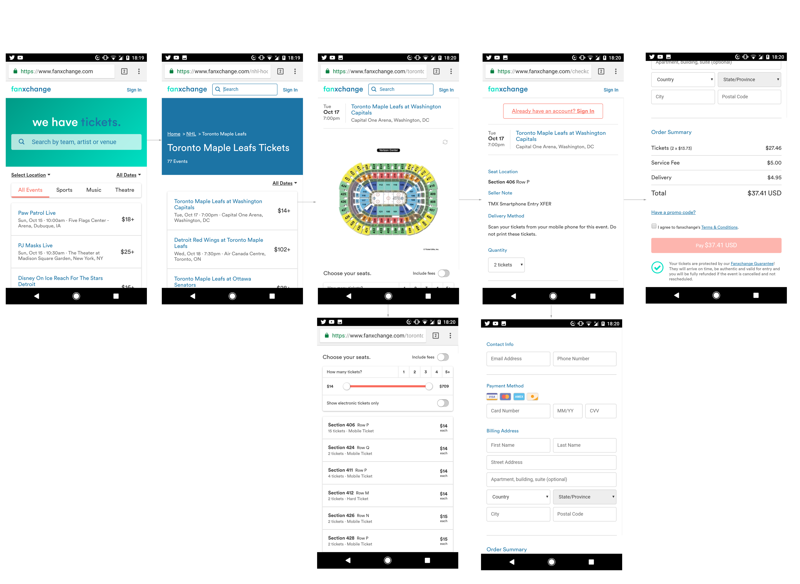

About
Fanxchange is an online ticket marketplace where users can purchase tickets for millions of events all over North America. Fanxchange’s mission is to get user’s the best deal to see their favourite teams, artists or live show while instilling them with the utmost confidence in every order. I worked at Fanxchange over the summer of 2017 from April till August. During my time there I helped with the ideation, conceptualization and implementation of Fanxchange’s latest user platform for both mobile and web.
How It Works
Fanxhange wanted to change to a new platform that could enable user’s to purchase tickets in just a few simple clicks, so we did exactly that. User's can login to their accounts, browse through millions of live events and purcahse the tickets they choose in a matter of seconds.
Design Process
Fanxchange’s platform allows user’s to have ticket’s in their possession with just a few simple clicks. All the user must do in order to purchase their tickets is simply login, browse and then purchase. Myself along with the rest of the design team at Fanxchange sketched and conceptualized wireframes to decide on final user flow and sitemaps. We worked through multiple iternations, none too different than the other but enough that the user's experience would differ between each iteration. The process is designed to be linear but also make it accessible enough so that user’s may go back if they need to switch any of their previous decisions. We wanted to make sure the user could get to the checkout page in as few screens as possible, to do this we used our previous concept model of login, browse and purchase. We spent a lot of time ensuring that the platofrm was cohesive, we did large amount of internal and external user testing to ensure that we made no oversights with the product. What we ended up with was a sleek and simple ticket purchasing process that user's can navigate through easily and confidently.

Conclusion
Fanxchange launched FX4 in October of 2017, currently the version that I helped contribute to is live on their site and you can view it here for yourself!
< Back